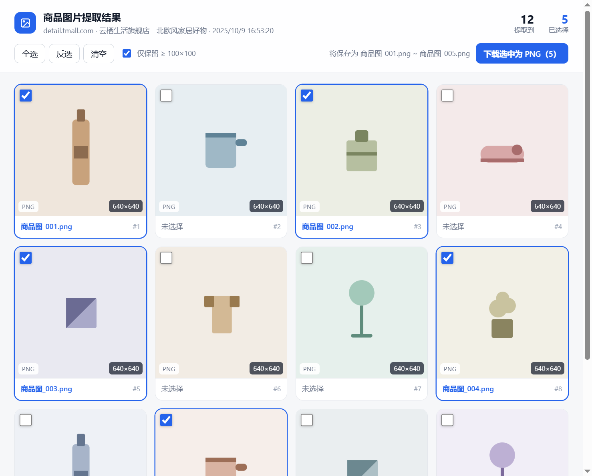
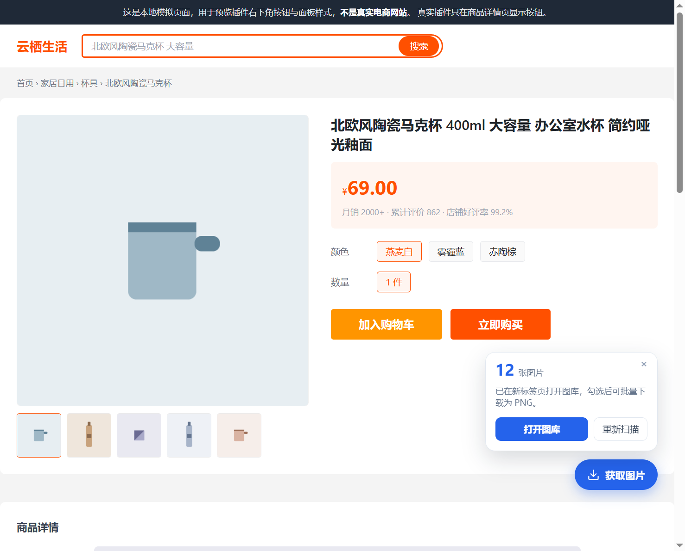

五种来源一起扫
<img>、srcset、
data-src / data-lazy-src 等懒加载属性、
行内与样式表里的 background-image，一次采齐。
在淘宝 / 天猫、京东、拼多多商家版的商品详情页点一下，自动扫描
<img>、srcset、懒加载属性和背景图，
过滤掉图标与占位图，集中展示后勾选下载，统一输出 PNG。

详情页的图片分散在主图、SKU 缩略图、详情长图、背景图里，还可能藏在懒加载属性中。 插件把这一步集中做完，你只需要勾选和下载。
<img>、srcset、
data-src / data-lazy-src 等懒加载属性、
行内与样式表里的 background-image，一次采齐。
图标、logo、占位图、1×1 像素图，以及小于 100×100 的图片会被排除； 加载失败的链接也不会混进结果。
天猫的 _430x430q90.jpg、京东的
!q70.dpg.webp、拼多多的 imageView2 缩略参数会被去掉，
拿到的就是原图。
在 Service Worker 里用
createImageBitmap + OffscreenCanvas 转码，
不再受页面跨越限制，jpg / webp 一律输出 PNG。
逐张显示「正在处理 3/12」，完成后给出成功与失败数量， 失败项会附上原因，便于单独重试。
按勾选顺序命名为 商品图_001.png、商品图_002.png，
序号自动补零，排序不会错乱。
悬浮按钮只在商品详情页出现，固定在右下角，不遮挡购买按钮。

插件是本地代码，不上传任何图片，也不需要登录第三方账号。
地址栏输入 chrome://extensions，回车。
打开页面右上角的「开发者模式」开关。
点击「加载已解压的扩展程序」，选择本项目的
extension 目录即可。
开始使用： 打开任意商品详情页，右下角会出现「获取图片」按钮； 点击后图库会在新标签页打开。
提示： 详情页的长图往往需要向下滚动才会加载， 如果数量偏少，先滚动一遍页面再点一次。
按钮只在商品详情页出现，列表页、搜索页、店铺首页都不会显示。
支持的地址形如 item.taobao.com/item.htm?id=…、
item.jd.com/数字.html、
mobile.yangkeduo.com/goods.html?goods_id=…。
插件会剔除小于 100×100 的图片、图标和占位图。如果详情长图还没加载， 先滚动到页面底部再重新扫描一次。
常见原因是 CDN 的防盗链或图片已被删除。失败项会在完成后给出原因， 可以在图库中取消勾选后重新下载其余图片。
不会。扫描、转换、保存都在本地浏览器内完成，插件没有任何后端接口， 也不收集任何使用数据。
目前固定为 商品图_001.png 这样的格式，按勾选顺序递增。
如需自定义，可修改 extension/lib/image-utils.js 中的
makeFilename。